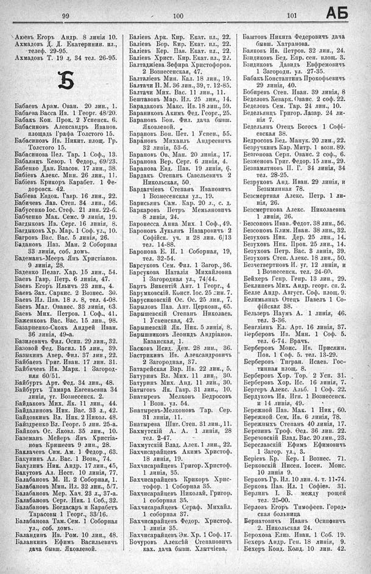

Лист источника 539
Скан

Распознанный текст
99
100
101
АБ
Аюевъ Егоръ Андр. 8 линія 10.
Ахмадовъ Д. Д. Екатеринин. пл.,
телєф. 29-95.
Ахмадовъ Т. 19 л. 34 тел. 26-95.
Б
Бабаевъ Арам. Ован. 20 лин., 1.
Бабаева Васса Ив. 1 Георг. 48/20.
Бабакъ Кон. Прок. 2 Успенск. 6.
Бабасиновъ Александръ Иванов.
площадь Графа Толстого 15.
Бабасиновъ Ив. Никит. площ. Гр.
Толстого 15.
Бабасинова Пел. Тар. 1 Соф., 13.
Бабаянцъ Кевор. 1 Федор., 69/23.
Бабенко Дан. Власов. 17 лин., 38.
Бабіевъ Алекс. Мин. 26 лин., 11.
Бабіевъ Крикоръ Карабет. 1 Фе-
доровск. 42.
Бабіева Евдок. Гавр. 16 лин., 22.
Бабичевъ Лав. Степ. 34 лин., 56.
Бабусенко Іос. Стеф. 21 лин. 22-б.
Бабченко Мак. Семс. 9 линія, 19.
Багдыковъ Ив. Серг. 16 линія, 8.
Багдыковъ Хр. Мар. 1 Соф. ул., 10.
Багровъ Вас. Вас. 5 линія, 26.
Бадановъ Наз. Ман. 2 Соборная
33 линія, соб. домъ.
Бадеманъ-Мееръ Янъ Христіанов.
9 линія, 28.
Баденко Пелаг. Хар. 15 лин., 54.
Баевъ Гавр. Петр. 6 линія, 47.
Баевъ Егоръ Ильичъ 23 лин., 4.
Баевъ Зах. Саркис. 2 Вознес. 30.
Баевъ Ил. Пав. 18 л. 8, тел. 4-08.
Баевъ Маг. Ованес. 33 линія, 63.
Баевъ Мих. Петров. 1 Соф., 41.
Баженковъ Вас. Вас. 15 лин., 98.
Базарненко-Скокъ Андрей Иван.
36 линія, 49-а.
Базилевичъ Фил. Осип. 29 лин., 32.
Базовой Фед. Васил. 15 лин., 39.
Базыкинъ Авер. Фил. 37 лин., 22.
Байбаевъ Григ. Иван. 17 лин. 31.
Байбичевъ Ив. Марк. 1 Загород-
ная 60/51.
Байбургъ Арт. Фед. 34 лин., 48.
Байбуртъ Тамара Евгеньевна 34
линія, уг. Вознесенск. 2.
Байдаковъ Мих. Як. 11 лин., 44.
Байдалиновъ Ник. Вас. 33 л., 42.
Байдовкинъ Вл. Ник. 2 Никол. 48.
Байдренко Вл. Георг. 5 лин. 25-а.
Байковъ Ос. Яковл. 35 лин., 10.
Баземанъ Мейеръ Янъ Христіа-
новъ Кришеевъ 9 лин., 28.
Баклачевъ Сим. Ам. 1 Федор., 63.
Бакунинъ Ал. Вас. 1 Возн., 74.
Бакулинъ Ник. Андр. 17 лин., 45,
Бакутовъ Ал. Нест. 10 линія, 77.
Балабановъ М. И. 2 Соборная, 1.
Балабановъ Мин. Ил. 32 лин., 5/7.
Балабановъ Мер. Хач. 23 л., 37-а.
Балабановъ Серг. Ник. 1 Соб., 32.
Балабановъ Богдасаръ и Карабетъ
Тарасовы 1 Георг., 33/16.
Балабанова Там. Сем. 1 Соборная
ул., соб. домъ.
Баландинъ Ив. Ром. 10 лин., 48.
Баланкинъ Ефимъ Васильевичъ
дача бывш. Яковлевой.
Баліевъ Арк. Кир. Екат. пл., 22.
Баліевъ Бор. Кир. Екат. пл., 22.
Баліевъ Кер. Пав. Екат. пл., 22.
Баліевъ Христ. Кир. Екат. пл., 22.
Балтаджіева Зефира Христофоров.
2 Вознесенская, 47.
Балталіевъ Мин. Кал. 18 лин., 19.
Балтачи Н. М. 36 лин., 39, т. 12-85.
Балтачи Мих. Вас. 11 лин., 11.
Бештавовъ Мар. Ил. 25 лин., 14.
Барадаковъ Макс. Ив. 18 лин., 59.
Бараниковъ Акимъ Фед. Георг., 25.
Барановъ Бон. Фил. дача бывш.
Яковлевой.
Барановъ Бон. Пет. 1 Успен., 55.
Барановъ Михаилъ Андреевичъ
32 линія, 53-б.
Барановъ Ов. Ман. 20 линія., 17.
Баранова Вер. Серг. 6 линія, 4.
Баранова Евд. Пав. 19 линія, 6.
Бардакъ Степанъ Савельевичъ 2
Никольская, 50.
Бардатчіевъ Степанъ Ивановичъ
1 Вознесенская ул., 19.
Барисьянъ Сам. Кар. 20 л., с. д.
Баркаровъ Петръ Мемьяновичъ
8 линія, 24.
Баронесса Анна Мих. 1 Соф., 49.
Бароновъ Лукьянъ Назаровичъ 2
Софійск. уч. и 28 лин. 6/13
тел. 14-88.
Баронова Е. И. 1 Соборная, 19,
тел. 32-54.
Барсуковъ Сем. Фил. 1 Загор., 36.
Барсукова Наталія Михайловна
1 Загородная ул., 74/44.
Бартъ Викентій Ант. 1 Георг., 4
Барумковскій. Конст. Іос. 25 лин. 7.
Барусиковскій Ос. Ос. 25 лин., 7.
Барыловъ Пав. Ант. Церковн., 65.
Барышевскій Степанъ Николаев.
1 Успенская, 42.
Барышевскій Як. Ник. 5 линія, 8.
Барышниковъ Леонидъ Андріанов.
Казанская, 1.
Басковъ Исид. Дем. 28 лин., 36.
Бастрикинъ Ив. Александровичъ
2 Загородная, 37.
Батарейская Вар. Ив. 22 лин., 5.
Батуринъ Вл. Мих. 11 лин., 30.
Батуринъ Мих. Анд. 11 лин., 30.
Батыговъ Як. Гавр. 31 лин., 10.
Бнатыревъ Мелконъ Бедросовъ
1 Возн. ул. 54.
Бнатыревъ-Мелконовъ Тар. Сер.
31 линія, 11.
Бнатырева Шиг. Степ. 31 лин., 11.
Бахмутскій А. А. 1 линія, 28
тел. 2-47.
Бахмутскій Влад. Алек. 1 лин., 22.
Бахчисарайцевъ Акимъ Христоф.
18 линія, 19.
Бахчисарайцевъ Григор. Христоф.
1 линія, 35.
Бахчисарайцевъ Крикоръ Хрис-
тофор. 1 Соборная 35.
Бахчисарайцевъ Николай. Григор.
1 соборная 35.
Бахчисарайцевъ Сераф. Михайл.
1 соборная 37.
Бахчисарайцевъ Федор. Христоф.
1 линія 35.
Бахчисарайцевъ Эм. Хр. 1 Соф. 17.
Бочуровъ Алексѣй Степановичъ
ках. дача бывш. Хлытчіева.
Баштовъ Никита Федеровичъ дача
бывш. Хатранова.
Баяковъ Ив. Петров. 32 лин., 24.
Бзидиковъ Бед. Епр. сен. площ. 3.
Бзидиковъ Давидъ Евфремовичъ
1 Загородн. ул. 27-35.
Бабакъ Константинъ Прокофьевичъ
29 линія, 40.
Бобиревъ Степ. Иван. 39 линія, 8
Беделовъ Кеварк. Ованс. 2 соф. 22.
Беделовъ Сем. Тар. 24 лин., 10.
Бедельянцъ Григор. Лазар. 24 ли-
нія 7.
Бедельянъ Отецъ Богосъ 1 Софі-
евская 38.
Бедросовъ Бед. Манук. 20 лин., 22.
Безручкинъ Кар. Митр. 1 возн. 89.
Безгонова Серп. Ованс. 2 соф., 6.
Безменовъ Григ. Федор. 15 лин., 29.
Безпамятновъ П. Г. 34 линія, 34
тел. 28-25.
Безруковъ Анд. Иван. 29 линія, и
Безымянная 78.
Безсмертная Алекс. Петр. 1 ли-
нія, 26.
Безсмертнова Алекс. Николаевна
1 линія, 26.
Безсоновъ Иван. Федот. 38 лин., 56.
Безсоновъ Клим. Иван. 38 лин., 32.
Безуховъ Ник. Дер. 25 лин., 14.
Безуховъ Ник. Прок. 25 лин., 14.
Безуховъ Петр. Вас. 3 линія, 39.
Безуховъ Степ. Алекс. 18 лин., 50.
Безчетвертновъ И. уг. 12 линіи, и
1 Вознесенск. тел. 24-60.
Бейхеръ Генр. Генр. 13 лин., 29.
Беклиневъ Мих. Андр. георг. сп. 2.
Белле Андр. Август. Соф. площ. 9.
Белимьянцъ Отецъ Павелъ 1 Со-
фійская 38.
Бельзеръ Наумъ А. 1 линія, 46.
тел. 3-36.
Бенгліянъ Ел. Арт. 16 линія, 37.
Берберовъ Ив. Мин. 1 Соф. 5.
тел. 6-74. Врачъ.
Берберовъ Моис. Ив. Присяжн.
Пов. 1 Соф. 5. тел. 13-29.
Берберовъ Тигран. Исаев. Гос-
тинная площ. 8.
Берберовъ Хор. Тор. 2 Усп. 31.
Берберовъ Хор. Ис. 16 линія, 7.
Бергеръ Алекс. Альб. 1 Соф. 22.
Бердуковъ Ив. Игн. 1 Вознесенск.
и 14 линія, 49.
Бережной Пав. Мак. 1 Ник, 60.
Бережной Сем. Ив. 6 линія, 78.
Бережныхъ Степанъ 40 линія, 17.
Березинъ Троф. Ѳед. 36 лин. 22.
Березовскій Влад. Вас. 20 лин., 23.
Береславскій Ефимъ Ефимовичъ
1 Загор. ул., 3.
Беріевъ Кр. Кер. 1 Вознес. 71.
Берковскій Нисен. Іосен. Моис.
10 линія 9.
Берковъ Гр. Ил. 10 лин. 4. т. 11-74.
Берковъ Пав. Ил. 1 Софіев. 31.
Берлинъ І. Б. между рощей
тел. 25-00.
Берловъ Егоръ Тимофеев. Город-
ская больница
Бернатовичъ Иванъ Осиповичъ
2. Никольская 24.
Берохова Елиз. Иван. 1 Соб. 19.
Бехеръ Андр. Ген. 18 линія, 9.
Бехеръ Конд. Конд. 10 лин. 42.